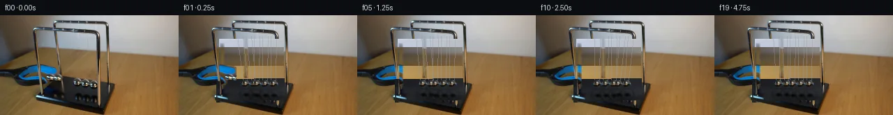

![首帧]()

Round 00
2026-11-06T05:03:02.701068+00:00像素候选变化代码 +375/−0inspection 更新
pixels 277a5809d44a5009 · code c9e18a19963360d3
查看本轮 generate.py 真实 diff
--- previous/generate.py
+++ current/generate.py
@@ -0,0 +1,375 @@
+"""PixelWorld vision-input generator — case_0054.
+
+Newton's cradle: two left balls, held at amplitude by a blue/black grabber,
+are released and oscillate (2-in/2-out exchange), damped. Frame 0 is the
+byte-exact first frame; frames 1..19 are composited with local pixel ops:
+modeled clean plate, original chrome crops, extracted ball/shadow/grabber
+sprites, analytic pendulum motion.
+"""
+import numpy as np
+from PIL import Image, ImageDraw, ImageFilter
+import artifact_io, math
+
+W0 = 256; H0 = 144
+CASE = '.'
+orig_u8 = np.array(Image.open('first_frame.png').convert('RGB'))
+orig = orig_u8.astype(np.float32)
+O = orig.copy()
+
+# ---------------------------------------------------------------- geometry
+PIV_Y = 29.0
+PIV_X = [88, 100, 112, 124, 136] # string pivots on front bar
+L = 70.0 # pendulum length, px
+REST_Y = PIV_Y + L # 99
+BALL_R = 6.0
+DX0 = -16.5 # initial amplitude displacement
+TH0 = math.asin(DX0 / L) # 0.2376 rad
+PERIOD = 1.5
+OM = 2 * math.pi / PERIOD
+DAMP = 0.88 # per half-cycle
+TCOLL = [0.375 + 0.75 * k for k in range(7)]
+
+
+def state(t):
+ """Return ('L'|'R', theta of moving pair) or ('rest',0)."""
+ if t < TCOLL[0]:
+ return 'L', -TH0 * math.cos(OM * t)
+ k = 0
+ while k + 1 < len(TCOLL) and t >= TCOLL[k + 1]:
+ k += 1
+ dt = t - TCOLL[k]
+ amp = TH0 * DAMP ** (k + 1)
+ s = math.sin(OM * dt)
+ if k % 2 == 0: # after c0: right pair out
+ return 'R', amp * s
+ else: # after c1: left pair out
+ return 'L', -amp * s
+
+
+def ball_positions(t):
+ """Five ball centers; moving pair offset by theta."""
+ side, th = state(t)
+ cx = [float(x) for x in PIV_X]
+ cy = [REST_Y] * 5
+ if side == 'L': # balls 0,1 move
+ for i in (0, 1):
+ cx[i] = PIV_X[i] + L * math.sin(th)
+ cy[i] = PIV_Y + L * math.cos(th)
+ elif side == 'R': # balls 3,4 move
+ for i in (3, 4):
+ cx[i] = PIV_X[i] + L * math.sin(th)
+ cy[i] = PIV_Y + L * math.cos(th)
+ return list(zip(cx, cy)), side, th
+
+
+# ---------------------------------------------------------------- helpers
+def paste_rgba(dst, src_rgba, x, y):
+ """Paste float RGBA image (HxWx4, 0..255) with top-left at (x,y)."""
+ h, w = src_rgba.shape[:2]
+ H, W = dst.shape[:2]
+ x0, y0 = max(0, x), max(0, y)
+ x1, y1 = min(W, x + w), min(H, y + h)
+ if x0 >= x1 or y0 >= y1:
+ return
+ sx0, sy0 = x0 - x, y0 - y
+ sx1, sy1 = sx0 + (x1 - x0), sy0 + (y1 - y0)
+ a = src_rgba[sy0:sy1, sx0:sx1, 3:4] / 255.0
+ dst[y0:y1, x0:x1] = dst[y0:y1, x0:x1] * (1 - a) + src_rgba[sy0:sy1, sx0:sx1, :3] * a
+
+
+def soft_disk(size, r_in=5.1, r_out=6.3, cc=None):
+ """Soft circular alpha, 1 inside r_in, 0 outside r_out."""
+ if cc is None:
+ cc = ((size - 1) / 2, (size - 1) / 2)
+ yy, xx = np.mgrid[0:size, 0:size].astype(np.float32)
+ r = np.hypot(xx - cc[0], yy - cc[1])
+ a = np.clip((r_out - r) / (r_out - r_in), 0, 1)
+ return a
… diff truncated; 288 more lines …